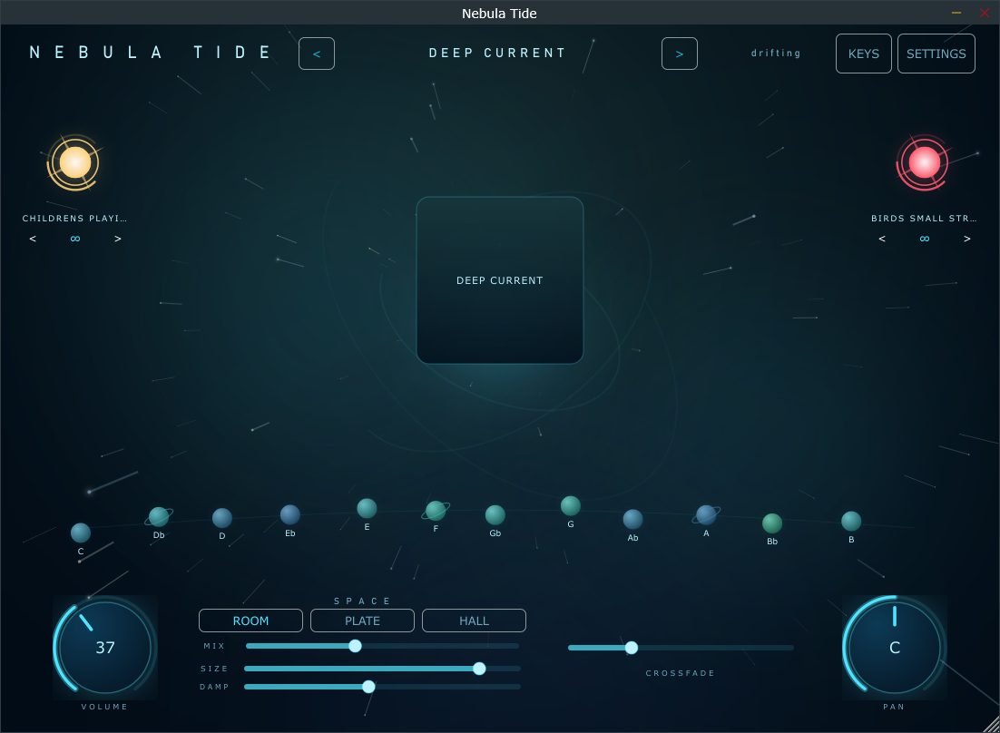

Primary interface — Windows standalone v1.3.0, idle. Left star = FX layer · right star = texture layer · centre = active preset · orbit = the 12 keys · footer = volume, reverb, crossfade, pan.
| Category | Virtual instrument — standalone + VST3 / AU / AUv3 |
| Purpose | A sustained harmonic bed in the right key, in one click |
| Users | Worship musicians & MDs · ambient producers · live performers |
| Status | Released on Windows & macOS via direct download; iOS/iPadOS & Android build but are unpublished |
| Palette | Navy ground, foam text. Accent is dynamic per preset (cyan default); FX gold and texture red are fixed |
| Surfaces | Glass panels, 18–22 px radius, over an animated starfield |
| Type | Platform sans, uppercase, wide tracking; none bundled |
| Controls | Text-only buttons · rotary knobs with bloom halo and value arc · 6 px sliders. Hover brighter, selected bloom, active breathing |
| Patterns | No dropdowns (arrows) · no tabs (Settings overlay) · no meters — level drives the starfield |
| Motion | 60 fps starfield, aurora, breathing pad, colour morph, bloom; OpenGL on desktop |
| Feel | Calm, cinematic deep space; dark, luminous, minimal chrome |
| Stack | JUCE 8.0.6 · C++17 · CMake + Projucer (Android); no third-party deps |
| Platforms | Windows 10+ · macOS 10.13+ universal · iOS 15+ · Android 7+, as Standalone / VST3 / AU / AUv3 |
| Audio | Buffered playback; equal-power crossfades on loop, key and preset; juce::Reverb ×3; constant-power pan |
| Content | Encrypted .ntlib (Blowfish-CTR), RAM only. FLAC 255 MB desktop / Ogg 94 MB mobile, shipped in the app |
| Privacy | No account, DRM, analytics or telemetry; one version-check call at launch |
| Build | GitHub Actions → Inno Setup · pkgbuild · APK/AAB |
| Signing | Android verified, Apple Distribution issued; Windows signing and macOS notarisation outstanding |
| Tooling | In-house Nebula Forge (preset authoring) and NebulaPack (container builder) |
Scope. As built on 2026-09-01. Desktop is released and in use; mobile builds compile but are unpublished and not device-tested. Absent work appears only under Missing. No credentials or secrets are referenced.